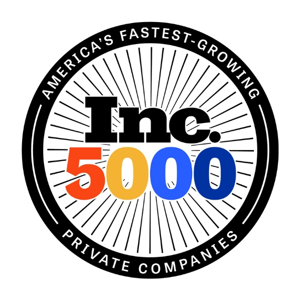

DOXA® was built on a belief that outsourcing should work better for the business and the people doing the work. We call that Conscious Outsourcing™. It shapes how we employ, support, equip, and develop our VIPs, and how we help clients build stronger global teams. Because how people are treated is not separate from performance. It is part of what makes better performance possible.
Companies go global for good reasons: access to talent, greater capacity, and lower costs. But lower labor costs should not require lower expectations for how people are employed, supported, or developed. That is where Conscious Outsourcing becomes more than a philosophy. It is reflected in how DOXA operates.
Every DOXA VIP signs a formal employment contract in the country where they live, with the benefits required in that market. DOXA carries payroll, tax, statutory benefits, and labor law. That is not a compliance footnote. It is the reason the work holds. People who are properly employed stay, and DOXA voluntary turnover is 14%, roughly half the offshore staffing industry average.
Every VIP works on a DOXA-issued encrypted device with managed access controls and monitoring, never a personal laptop. DOXA holds SOC 2 Type II certification, an independent audit of how those controls operate over time rather than a description of how they are meant to. Equipment ships before day one. You do not buy it, configure it, or chase it.
Placement is where most providers stop. Your Team Lead is a DOXA employee who owns structured onboarding, performance reviews at defined intervals, the development plan, and anything that needs an employer to act. You lead the work day to day. DOXA carries everything behind it.
Three ways to add capacity. Here is what each one actually gives you.
| DOXA | Freelance | US hire | |
|---|---|---|---|
| Vetted talent | Yes | No | Varies |
| SOC 2 Type II | Yes | No | Varies |
| Encrypted DOXA-issued device | Yes | No | No, rarely |
| Employer of Record | Yes | No | No, your burden |
| Structured onboarding | Yes | No | Varies, sometimes |
| HR, payroll & benefits | Yes, handled by DOXA | No | No, your cost |
| Cost vs U.S. hire | Up to 70% savings | Varies | Full cost |
| Your time zone | Yes | No | Yes |
Start here. DOXA directly employs its VIPs and manages the employment responsibilities surrounding them.
Retention is one of the clearest tests of the employment experience. DOXA voluntary turnover: 14%.
DOXA VIPs receive applicable benefits and support in the market where they live, plus DOXA-managed equipment, HR support, and the employment infrastructure surrounding the role.
Proper employment is the beginning. Conscious Outsourcing also means continuing to invest in people after the hire. DOXA VIPs are in the process of becoming independently AI-certified so their capabilities can keep growing as the work changes.
Employee eNPS: 72. Great Place to Work® Certified. Client NPS: 84. Voluntary turnover: 14%.

Inc. 5000Two-time national honoreeOne all-in monthly rate covers the role and everything around it. There is no separate line for any of the following.
Clients save up to 70% on fully burdened labor costs compared to a U.S.-based equivalent. That number is real, and it is still the wrong reason to choose a partner. Inexpensive offshore labor is easy to find. What is hard to find is a person who is properly employed, properly equipped, and still on your team a year from now. The savings follow from the model. They are not the model.
Global staffing should not solve a company problem by creating a people problem somewhere else. DOXA is designed to create a healthier system for the client and the VIP, with proper employment, support, security, development, and clear accountability.
Ethics aren’t separate from performance.
They’re part of the operating model that produces performance.
DOXA operates as a distributed company. Remote work eliminates daily commuting for professionals, expands the talent pool available to clients, and gives employees more control over the time surrounding their workday.
Direct employment, benefits, secure equipment, support, and continued development are not separate from performance. They create conditions for people to stay, grow, and contribute more over time.
“We currently have five DOXA VIPs that work for us in various roles. They have been phenomenal. The caliber of candidates that we’ve received has been by far superior to what we’ve been able to find locally. They aren’t afraid to dig deep and give us the results we need and go above and beyond in everything that they do.”
“DOXA has helped us find quality candidates in a much faster timeframe than what we’ve been able to source domestically and allowed us the opportunity to find the people that we need who are able to help us move and scale quickly.”
If you have been asked to defend an offshore decision internally, take these five questions to every provider on your list, including us.